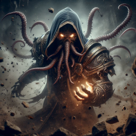

Some illithids dedicated themselves to studying and honing their innate abilities. Known as illithid psions, they
were capable of even more remarkable feats of psionic power, including telekinetic abilities akin to mage hand and
telekinesis; further mental control abilities such as charm person, command, sanctuary, fear, crown of madness,
phantasmal force, and confusion; and even divination abilities such as guidance, true strike, see invisibility,
clairvoyance, and scrying.
Spells
- See Invisibility
- Charm Person
- Command
- Confusion
- Crown Of Madness
- Guidance
- Mage Hand
- Phantasmal Force
- Sanctuary
- True Strike
- Fear
Custom spells
Aura of Repulsion
Force Cone
Force Push
Greater Black Hole
Psionic Burst
Psion Telekinesis
Wall of Repulsion